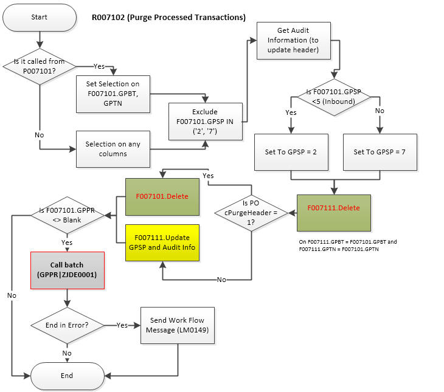

This document describes the as-is functionality of R007102 (Purge Processed Transactions). Currently multiple applications may interface Text Processor, example, Bank Tape, JinShui tax report and so on. This UBE is used across many applications.
Refer to the following guide for more detail:
JD Edwards EnterpriseOne Applications Financial Management Fundamentals Implementation Guide
27 Working with the Text File Processor
27.3 Purging a Text Batch in the Text File Processor
The following explains the table relationship between the header and detail tables used by R007102.
| Seq | Alias | Description | Explanation |
| 1 | GPBT* | BatchNumber [8] | A number that identifies a group of transactions that the system processes together. The system assigns this number using Next Numbers. NN (00|7) |
| 2 | GPTN* | TransactionNumber [14] |
A unique alphanumeric field that identifies a text batch. The transaction number is determined by the process that creates the text batch. Commonly the application ID which writes F007101/F007111 is to be written here. |
| 3 | GPUS | UserID [10] |
The user ID of the person who created the text batch. You can sort text batches by user ID so that users can select their own batches. This value can be used when you run submit R007102 from Batch Versions. |
| 4 | DL01 | Description001 [30] | Depending on writing application this can be written some value to differentiate or to enable easier search. It can be application ID or date of generation and so on. |
| 5 | PGM | ProgramName [10] |
(Optional) The name of an executable program. This column can be populated with UBE which writes these text files |
| 6 | VERS | Version [10] | (Optional) In case application which writes F007101/F007111 is specified then version can be specified here. |
| 7 | GPSP | ProcessedFlag [1] | (GC Status Flag) A flag that shows the current status of batches in the Text File Processor. Valid values are: (Outbound) Blank Unprocessed / Outbound 1 Processed / Outbound 2 Purged / Outbound 3 Suspended / Outbound 4 Corrupt / Outbound (Inbound) 5 Unprocessed / Inbound 6 Processed / Inbound 7 Purged / Inbound |
| 8 | GPDP | ProcessedDate [6] | The date that the text batch was processed. |
| 9 | GPPR | AdditionalPurgeProcess [10] | In case you or a certain routine has populated a certain application ID (e.g., R03B673) then R007102 will call R03B673 to purge additional information. So you can specify purge application to call (note that the version is hard coded as ZJDE0001 through business function AdditionalPurgeProcess (B0001001, Call Additional Purge Process) which is called at the End Section of R007102). |
| 10 | GPR1 | FutureUseReference [14] | |
| 11 | GPF1 | InventoryFlag [1] | |
| 12 | URC1 | UserReserveCode [3] | |
| 13 | URRF | UserReservedReference [15] | |
| 14 | URDT | UserReservedDate [6] | |
| 15 | URAB | UserReservedNumber [8] | |
| 16 | USER | UserId [10] | |
| 17 | PID | ProgramId [10] | |
| 18 | JOBN | WorkStationId [10] | |
| 19 | UPMJ | DateUpdated [6] | |
| 20 | UPMT | TimeLastUpdated [6] |
| Seq | Alias | Description | Explanation |
| 1 | GPBT* | BatchNumber [8] | A number that identifies a group of transactions that the system processes together. The system assigns this number using Next Numbers. NN (00|7) |
| 2 | GPTN* | TransactionNumber [14] | A unique alphanumeric field that identifies a text batch. The transaction number is determined by the process that creates the text batch. |
| 3 | LIN* | LineNumberGeneral [7] | To move rapidly through a long list of journal entries, enter a line number. The system shifts the information on that line to the top of the display. |
| 4 | GPTX | Text [1500] | A user defined name or remark. |
| 5 | GPSP | ProcessedFlag [1] | |
| 6 | URC1 | UserReserveCode [3] | |
| 7 | URRF | UserReservedReference [15] | |
| 8 | URDT | UserReservedDate [6] | |
| 9 | URAB | UserReservedNumber [8] | |
| 10 | USER | UserId [10] | |
| 11 | PID | ProgramId [10] | |
| 12 | JOBN | WorkStationId [10] | |
| 13 | UPMJ | DateUpdated [6] | |
| 14 | UPMT | TimeLastUpdated [6] |
R007102 uses the following report data structure. This is to enable user to call R007102 either through report interconnection or through work with batch versions.
| Structure Member Name | Data Item | Alias | Description |
| mnBatchNumber | BatchNumber | GPBT | This value is to use for Data Selection when R007102 gets called from P007101 |
| szTransactionNumber | TransactionNumber | GPTN | This value is to use for Data Selection when R007102 gets called from P007101 |
| szAdditionalPurgeProcess | Additional Purge Process | GPPR | This parmaeter contains executable UBE ID. If the value is specified then it can be called from R007102 |
| cProcessFlag | ProcessFlag | GPSP |
Ths parameter is to determine,
|
Processing option below determines whether to purge header file (F007101) or not.
| Tab | Parameter | Help Text |
| Process | 1. Purge Header Records Blank = Do not delete header records 1 = Delete header records |
Use this processing option to determine whether to delete corresponding header records from the Text Processor Header table (F007101) along with detail records from the Text Processor Detail Table (F007101). Deleting only detail records updates the processed flag in the Text Processor Header file to 2 (purged/outbound) or 7 (purged/inbound). Records marked as purged cannot be reset to an unprocessed status. Valid values are:
|
This parameter determines whether to delete (note that there is no archive option) header file (F007101) or not. In case it is not purged, the field F007101.GPSP is updated with either '2' or '7' depending if it is for outbound or inbound respectively.
Runtime data selection but it excludes where F007101.GPSP IN ('2', '7') because detail F007111 has been purged previously.

Explanation: